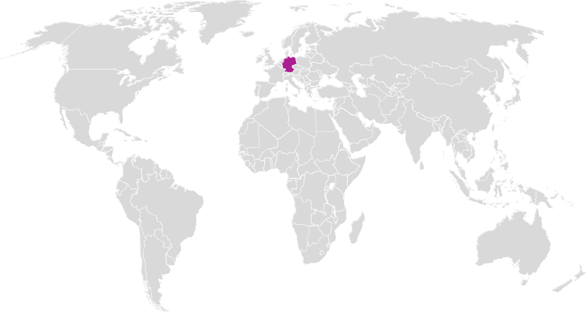
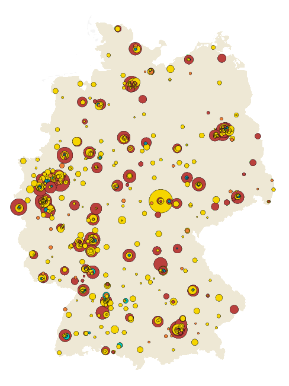
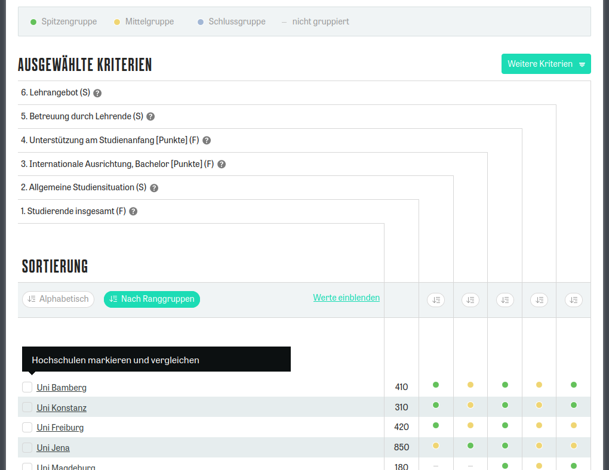

Guide to Germany / 我去德国的路
Südwest Jiaotong Universität
27. Mai 2025
Fernseher
1930
Buchdruck
1440
Röntgenstrahlen
1895
Airbag
1971
Scanner
1963
Automobil
1886
Aspirin
1897
MP3
1995
Chipkarte
1969


| Universität | ||
|---|---|---|
| Fächer 课程设置 |
Viele Fächer, verschiedene Fachgebiete, z.B. DaF, Germanistik, Maschinenbau, Kunst, Jura, BWL, Soziologie, Theologie, Medizin, … | 学科较多、专业齐全，包外国德语，德语语言文学，工科，理科，文科，法学，经济学，社会学，神学，医学，。。。 |
| Abschluss 毕业学位 |
Bachelor (3-4 Jahre) Master (+2 Jahre) Promotion (+3-5 Jahre) |
本科（3-4 年) 硕士（+2 年 博士（+3-5 年） |
| Schwerpunkt 重点 |
Akademische Forschung und Lehre | 科研与教学并重，强调基础研究和理论知识系统化 |
| Fachhochschule | ||
|---|---|---|
| Fächer 课程设置 |
Bestimmte Fächer, vor allem Maschinenbau, BWL, Design, Krankenpflege, keine Geisteswissenschaften | 一般只设有几个专业，但特色极为突出，如工程学，商科，管理，社会学，设计等 |
| Abschluss 毕业学位 |
Bachelor (3-4 Jahre) Master (+2 Jahre) |
本科（3-4 年) 硕士（+2 年） |
| Schwerpunkt 重点 |
Angewandte Forschung, praktischer | 除掌握必要的基础理论外，强调与实践的高度结合 |
Vor dem Bachelor
Mindestens ein Semester an “211” Universität studieren
至少在国内重点大学就读一个学期
APS + Sprachprüfungen
APS + 一定的语言要求
Bachelor-Studium in DE
进入德国大学本科学习
Nach dem Bachelor
Bachelor von anerkannter Universität in China
至少在国内普通高校就读满三个学期
APS + Sprachprüfungen
APS + 一定的语言要求
Master-Studium in DE
进入硕士阶段
Nach dem Master
Akademische Prüfstelle 德国驻华使馆文化处留德人员审核部
TestDaF 德福考试
| TestDaF-Institut | 德福考试院 |
|---|---|
| 12 Universitäten in China | 中国目前有12个考点 |
| 3/Jahr: März, Juli, November | 中国地区每年 3次考试，分别在 3月，7月和 11月 |
DSH
| Jede Universität | 各个大学 |
|---|---|
| Prüfungsort wird von Uni bestimmt | 以德国大学的信息为准 |
| Prüfungszeit wird von Uni bestimmt | 以德国大学的信息为准 |
Registieren → Fach wählen → Hochschulart wählen:

Einmalige Kosten vor der Ausreise
| APS-Gebühren | 2.000 RMB |
| Rundflug | 10.000 RMB |
| Gesamt | 12.000 RMB |
Monatliche Kosten in Würzburg
| Essen | 250 EU | 1.970 RMB |
| Wohnen | 350 EU | 2.755 RMB |
| Versicherung | 110 EU | 866 RMB |
| Sonstiges | 230 EU | 1.810 RMB |
| Gesamt | 940 EU | 7.401 RMB |
https://www.daad.org.cn/zh/find-funding/scholarship-database/
Nur wenige Stipendien für Nicht-Graduierte
本科生的奖学金明显较少。
| Schritte in China | WS | SS |
|---|---|---|
| 1. TestDaF ablegen | März | Nov |
| 2. Uni wählen und Voraussetzungen recherchieren | Juli–Okt | Jan–April |
| 3. Unterlagen vorbereiten, übersetzen, beglaubigen | Juli–Okt | Jan–April |
| 4. APS | Okt–Feb | April–Aug |
| 5. Bei Uni bewerben | März–Juli | Sep–Jan |
| 6. Sperrkonto einrichten | Jul–Aug | Dez–Jan |
| 7. Visum beantragen | Aug–Sept | Jan–Feb |
| 8. Flugticket buchen, Wohnung suchen | Okt | März |
| 9. Bei Uni einschreiben | Okt | April |
| 在中国的步骤 | WS | SS |
|---|---|---|
| 1.参加TestDaF考试 | 三月 | 十一月 |
| 2.选择大学并研究入学要求 | 七月–十月 | 一月–四月 |
| 3. 准备文件，翻译，公证 | 七月–十月 | 一月–四月 |
| 4. APS | 十月–二月 | 四月–八月 |
| 5. 向大学申请 | 三月–七月 | 九月–一月 |
| 6. 开设冻结账户 | 七月–八月 | 十二月–一月 |
| 7.申请签证 | 八月–九月 | 一月–二月 |
| 8.订机票，找住所 | 十月 | 三月 |
| 9. 在大学注册 | 十月 | 四月 |
Bewerbungshilfe für internationale Studierende
外国学生申请大学服务处
https://www.study-in-germany.de/de/
Mehrsprachige Info-Seiten vom DAAD für alle, die in Deutschland studieren wollen: Schritt-für-Schritt von Recherche bis Studienbeginn
https://www.myguide.de/en/
Mehrsprachige DAAD-Seite: Studienfach wählen, Voraussetzungen prüfen, Universität kontaktieren
DAAD Stipendiendatenbank
Wo Sie das passende Stipendien für sich finden
https://www.make-it-in-germany.com/de/
Mehrsprachiges Portal der Bundesregierung mit vielfältigen Infos zu Arbeit, Studium und Ausbildung in Deutschland.
| Research in Germany | DAAD WeChat |
|---|---|
| Stipendiendatenbank | |
|---|---|
Wie DE mich verändert hat!
Slides online